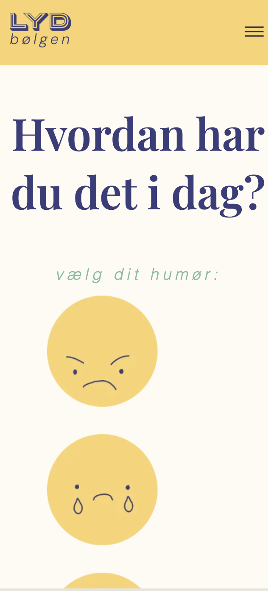

05
INDHOLD
TEMAET
I dette tema var der et større fokus på indholdsproduktion og re-design af et eksisterende website. Vi arbejdede for første gang i grupper, både to og to og i grupper på enten tre eller fire.
Vi blev introduceret til LottieFiles og at lave en interessant og fangende header. Derudover var der igennem hele forløbet indført projektstyringsværktøjer som SCRUM og Trello-board. Det skulle gøre samarbejds-processen nemmere og gøre arbejdet mere overskueligt.
OPGAVEN
I dette tema var der to opgaver; et passionssite og et virksomhedssite.
PASSIONSSITE
I denne opgave skulle vi finde en person med en passion. Herefter, skulle vi udfra et specifikt wireframe, kode et site med tekst, billeder og en video med et interview.
Min gruppemakker og jeg valgte min veninde Frederikke, som arbejder som tjener og barista på caféen “Fars Dreng” i indre København.

Hendes passion for hendes arbejde var inspirerende, og igennem et interview, inspiration fra caféen og med et udgangspunkt i opgavens kriterier lavede jeg et site med en hero-setion der indebar en LottieFile, forskellige grid-layouts, og en video der blev redigeret i Premiere Pro.
VIRKSOMHEDSSITE
Anden opgave var et virksomhedssite, hvor vi skulle tage udgangspunkt i et allerede eksisterende website.
Her tog vi igen udgangspunkt i “Fars Dreng”, til trods for at det ikke var et krav at det skulle være i sammenhæng med passionssitet. Dog valgte vi at fortsætte med deres virksomhed, da vi følte at deres eksisterende website kunne bruge et designmæssigt løft.
Vi gennemgik deres eksisterende site for at finde ting vi ville bevare og udskifte. Vi noterede vores indsigter, lavede styletiles, moodboards og research.
Tilsidst kunne vi påbegynde kodningen, hvor vi til sidst kunne levere et færdigt redesignet website, der havde løftet brugervenligheden og æstetikken.
Som afslutning på temaet fremlagde vi sitet vha. fremlæggelsesmetoden “Pecha kucha 20x20”. Vi fik både ris og ros efter fremlæggelsen; vi fik ros for at have løftet designet på vores html-sider, dog fik vi afvide at vores index-side havde lidt for mange elementer, som godt kunne vi et rodet look.
UDFORDRINGER
Min største udfordring ved processen var klart at fange grid-opsætningerne, der flere gange drillede mig. Til sidst var det en stor forløsning at få det til at virke, og efterfølgende har jeg flere gange vænnet tilbage til sitet for at genbruge de forskellige grid-layouts.
En anden udfordring jeg stødte på var at gøre min forside responsivt, det grid system jeg havde lavet med min følelses-bar, var svær at få til at se pæn ud på mobile-site. Derfor er jeg heller ikke endt med at være helt tilfreds med den endelige løsning på mobil. 
MIN LØSNING :
"03 - UX/UI - Emnesite"